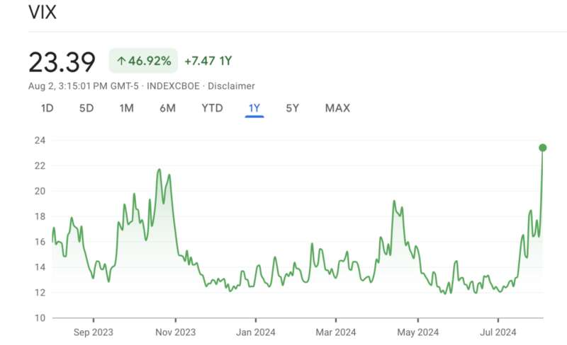
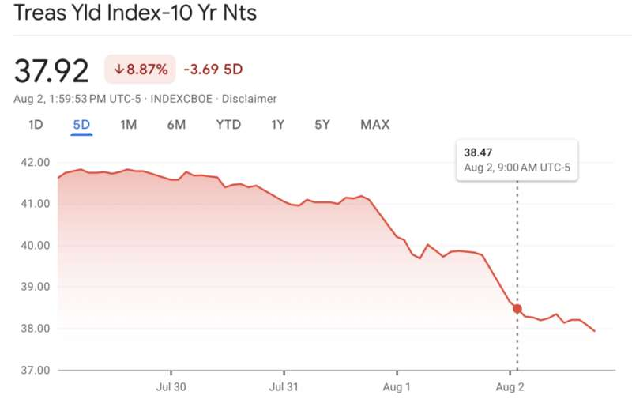
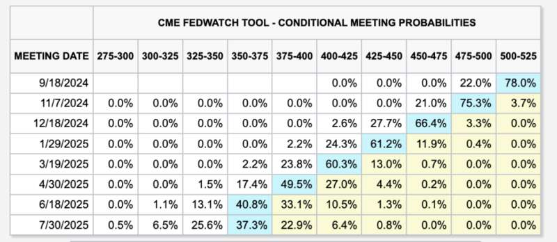

全球股市开启恐慌性暴跌模式。
在8月初日本央行和美联储先后公布货币政策决定，其中日本央行宣布加息25个基点，同时美联储宣布维持基准利率不变，但明确释放了9月份大概率降息的信号。
市场闻风而动，日元对美元汇率大幅飙升，以借入低廉日元转入高收益市场的“套息交易”偃旗息鼓。美联储明确降息信号对美股市场的利好提振也仅仅维持了一天，在8月初的交易日中，日本股市、欧洲股市及美国股市经历全面下挫。
更大的担忧来自于美国经济基本面的负面信号。反映工厂活动的ISM制造业指数低于预期，首次申领失业救济人数创2023年8月以来新高，7月份美国非农就业数据显示失业率进一步攀升。一时间对美国经济即将陷入衰退的恐慌情绪席卷市场。
对美联储的批评也接踵而至，许多经济学家指出，美联储基于经济数据做出相应货币政策调整的路径过于保守和滞后，从目前的情况来看，7月份“按兵不动”是错误决定，未来美联储只能通过加大降息幅度来弥补。
在新一轮经济数据和宏观环境出现变化的情况下，投资者的预期也开始发生变化，对美联储年底前大幅降息的预期开始在市场中占据主流。
除了宏观面的因素以外，对生成式AI能否兑现大规模投入的担忧也开始令市场承压。8月初，微软、谷歌、苹果、Meta等万亿市值级别的科技巨头集中发布财报，在这一轮生成式AI中，尽管巨头仍在进行巨额投入，但相应获得的新增收入和利润并没有成比例增加，华尔街开始重新思考相应的估值。
实际上今年以来，美股市场整体上涨主要由受益于生成式AI概念的巨头公司强劲上涨所拉动，资金朝头部公司集中的趋势愈演愈烈，去除掉这些因素以外，美股大部分上市公司的股价表现并不十分理想。在这一轮科技巨头普遍回调后，美股可能进入新一轮调整期。
另一个信号或许可以佐证上述观点，“股神”巴菲特旗下伯克希尔哈撒韦公司最新公布的第二季度财报显示，该季度巴菲特大幅减持第一大持仓股苹果，幅度近50%，而现金储备却达到历史最高的2769亿美元，比第一季度大幅增加46.5%。在美股市场中驰骋半个多世纪屹立不倒的“股神”可能已经提前觉察到市场的异样。
目前市场中“衰退交易”占据主流，利空情绪蔓延，但另一方面，美联储9月份降息以及后续开启大规模降息举动也已成为大概率事件，这可能为后续市场走高提供了条件。
曾在Citadel、Point72等机构供职的某美股私募机构人士对腾讯新闻《潜望》表示，通常在极端行情下，投资者容易陷入这样的两难境地，一方面前期的仓位损失惨重，容易被市场极度悲观情绪影响，另一方面也有投资者考虑“抄底”，但从目前的市场状况来看，或许还要经历一段时期的回调，盲目进场可能是不理智的行为。他建议普通投资者，在这一轮震荡放缓、行情走势更为明确后，再做出相应决策。
全球开启恐慌性暴跌 主要市场无一幸免
8月1日，美股道琼斯指数一度盘中下挫超过700点，标普500指数全天下跌1.37%，纳斯达克综合指数下滑2.3%，覆盖更多中小企业的罗素2000指数更是重挫超3%。
8月2日，随着美国最新一份非农就业报告出炉，市场不仅毫无止跌迹象，反而下跌的程度有增无减，美股继续全面下跌，标普500指数继续重挫1.84%，纳斯达克综合指数下跌超过2.4%，罗素2000指数跌幅继续超过3%。
投资者的悲观情绪笼罩全球市场，主要市场几乎无一幸免。日本日经指数在8月1日和2日持续下跌，创下4年多来最大单日跌幅，欧洲股市也出现全线下跌。
8月5日，日本股市开盘继续大跌，日经225指数跌超4％，东证指数跌幅扩大至3%。自1月11日以来，日经225指数首次跌破35000点。
美股的这一轮下跌由权重股领跌，包括苹果、微软、亚马逊、谷歌、英伟达等万亿市值以上科技巨头公司，跌幅都在3-5%之间，资金大规模出逃的迹象明显。衡量市场恐慌程度的波动指数跳涨23%，为2023年10月以来的最高水平。


市场情绪急转直下 多重因素重压美股
美国时间7月31日，美联储7月份议息会议决议尘埃落定，尽管并没有宣布下调基准利率，但在此次会议上，美联储几乎向市场发出了明确的9月份开启首次降息的信号。
投资者当天的乐观情绪显而易见，以对利率水平最为敏感的科技成长股为主的纳斯达克综合指数当天大幅上涨2.64%，其他板块也出现不同程度的普遍上涨行情。
但这样的市场表现却在之后被验证为昙花一现，美联储议息会议后的第二天，美股便开启了暴跌。最直接的起因是8月1日公布的7月份ISM制造业数据仅为46.8%，低于此前市场预期，该指数反映了美国的工厂活动情况，被普遍认为是经济活动衰退的信号。
随后，周五公布的非农就业数据继续加重了投资者的担忧，7月份数据显示美国失业率上升至4.3%，是自2021年以来最高水平。结合前一天公布的当周首次申领失业救济人数创下2023年8月份以来最高水平，显示美国就业市场开始出现明显放缓迹象。
对于美联储降息的乐观情绪仅仅维持了一天，市场情绪急转直下，原先的“降息引发的乐观情绪”瞬间变成了“与衰退相关的恐慌性抛售”。
一些分析人士开始批评美联储的货币政策转向动作太慢，错失了避免经济硬着陆的最佳时机。
有经济学家认为，美联储自身已经陷入了非常被动的境地，一方面由于此前美联储多次对外公开强调，要依赖经济数据而做出相应的决策。另一方面由于经济数据显著的滞后性，导致美联储如果完全遵循经济数据做出相应的货币政策调整，必然会慢半拍。如今事实正在朝着对美联储越来越不利的局面发展。
在经济数据显现出明显疲软，以及美联储明确9月份大概率开启降息周期后，市场对于美联储的降息动作形成了新一轮的预期。投资者预计美联储9月份直接降息50个基点而非25个基点的概率大增。
在这样的预期下，美联储的政策制定陷入了两难境地，一方面如果美联储直接在9月份进行50个基点的降息，那无疑是在向外界宣告，美联储之前对于形势存在误判，只能通过一次性更大幅度的降息，弥补之前动作过慢的负面影响。另一方面，如果美联储依然按照之前计划的25个基点的节奏降息，则无法遏制经济快速下滑的趋势。
此外，美股大幅回调的另一大因素来自于外部影响。在美联储宣布货币政策决议的前一天，日本央行宣布加息25个基点，日元对美元汇率应声上涨，之前借入便宜的日元投入美股市场的carry trade偃旗息鼓，短期内也对美股市场带来负面影响。
此外，美股正值财报季，部分已经公布财报的科技巨头，例如微软、谷歌等，尽管业绩基本面维持稳健，但此前被投资者寄予厚望的生成式AI相关的新增业务，收入和利润却并没有显著增加，但资本投入仍在显著增长。这反映出头部公司仍处在“军备竞赛”阶段，生成式AI真正产生的新增价值还未完全体现在财报业绩中，这也令投资者开始重新定位与之相关的上市公司估值。
降息动作已经明牌 幅度仍需探讨
在经历了上周的市场大幅抛售后，投资者目前关注的焦点主要集中在两个方面：一是美联储在货币政策调整方面是否迟缓，如何形成对美联储下一步动作的预期，另一方面在于生成式AI 概念能否继续维持部分公司的高估值。
对于第一个问题，许多密切关注时长动向的经济学家已经发表了意见。研究机构MacroPolicy Perspectives的创始人Julia Coronado表示，美联储绝对动作慢了，他们需要抓紧赶上。
评级机构穆迪首席经济学家Mark Zandi更加直言不讳地表示，美联储犯了错误，他们本应该在几个月前就做出降息决定。
“感觉9月份再做出25个基点的降息决定远远不够，降息50个基点，并采取更为激进的货币政策措施，是美联储需要做的。”Zandi说。
摩根大通首席美国经济学家Michael Feroli也认为，美联储应该在7月底的联储货币政策委员会议息会议上就做出降息的决定，在目前的情况下，他们不得不尽快降息。
他预计美联储在9月份和11月份的货币政策会议上将进行连续两次50个基点的降息决定。

芝加哥商品交易所实时更新的美联储监测工具显示，目前市场预期美联储在9月份议息会议上宣布降息25个基点的概率为78%，降息50个基点的概率为22%。到今年年底最后一次美联储议息会议，市场预计届时累计降息125个基点的概率已经有2.6%。
但也有经济学家表达了相对谨慎的观点。T. Rowe Price首席美国经济学家Blerina Uruci认为，一次性下调50个基点的降息幅度目前看上去有些激进，这将明确无误地向外界宣称，美联储之前确实动作慢了，可能引来市场更大的恐慌。
她认为，降息幅度的确定还将取决于8月份非农就业报告的数据，如果数据显示7月份的数据仅仅是由于天气因素被过度解读，那么联储官员会认为25个基点下调基准利率的幅度更为合适。